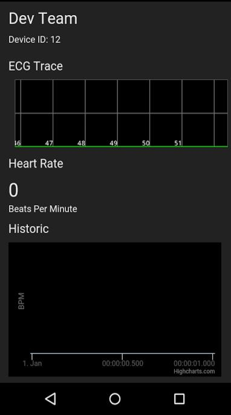
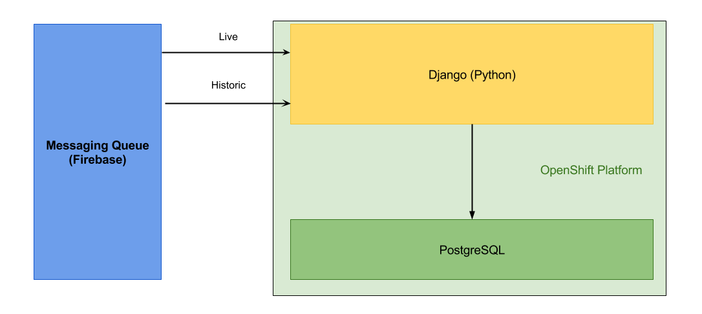

Outline
The UberVest hardware consists of two parts: a compression shirt containing electrodes and sensors, and a beltpack that contains signal processing circuits and the nRF51-DK board. These two components are modular and can be removed from each other allowing for the shirt to be hand washed.
The final design included electrodes and active low pass filtering circuitry to aquire an electrocardiogram (ECG) of the wearer of the shirt, and a sensor to allow monitoring of the wearer's temperature.
The design made use of the analogue to digital converter and Bluetooth Low Energy tranciever available in the nRF51822 microprocessor, which is included on the nRF51-DK. This allows us to read values from the analogue sensors and transmit the data on to the Android app.
The mobile app is how we read data from the device and push it to Firebase. This is done with a background thread that constantly checks for changes in the devices Bluetooth Low Energy characteristics. When a change occurs, the data is pulled from the device and converted into a standard int/float format. This data is then timestamped and pushed to Firebase for the API to process.

In the foreground, the app is displaying the data that is coming out of the API with a live ECG trace and temperature reading. The app is designed to be quick and simple to use, on the first start-up the user is taken to a log-in page. After they have entered their details the app automatically starts reading data and pushing it to Firebase, so the user doesn't have to wait or do anything complicated to start using the device.
The application interface aims to bridge the gap between the wearable device and the web interface. By focusing on processing and storage of raw sensory data received from the wearable, it allows us to decouple individual systems into the project. The primary focus of the api is on storage of relational data such as users and their respective devices as well as storage of processed data received from the wearable and making it available for future retrieval.
The API is composed of a Django application which implements a RESTful interface in order to allow the web interface to query relational data stored inside a PosgreSQL database. The same interface is also employed for storage of processed BPM data in order to allow future retrieval.
With the aim of making the project accessible in the public domain, we have deployed the application on a free tier of the OpenShift platform. This has allowed us to keep the costs down as well as make the project available to anyone.

From the diagram above, you can observe that the two data sources - PosgreSQL and Firebase are decoupled with the API serving as a bridge. Firebase is primarily used as a storage of raw data and live information whereas the relational database focuses on longer term storage of information. The architecutre of the application allows us to be flexible with information flow and provides increased development velocity.
The website provides an overview of the data being collected by the UberVest, with a live ECG trace and the last aquired temperature being shown to a signed in user.
Data displayed on the website is pulled from the UberVest API, with live data being pushed out by FirebaseL1.
Data processing and analysis consists largely of the generation of a live beats per minute (BPM) feed. Some research and experimentation on future applications of a respiratory sensor has also been completed.
The live BPM feed takes a moving window (between 4 and 15 seconds) as argument and returns a BPM value. ECG data is filtered through multiple methods to identify beats and then extrapolated to 60 seconds.
With regard to the potential future applications of the respiratory sensor, a method has been explored and tested to rank patients by their respiratory fitness and an experiment has been conducted to determine how good an indicator mean respiratory flow is of a young healthy individual's fitness.
Both in health and sport, the use of data analytics is becoming more and more popular. One significant example of this is Calico, a Google-backed biotechnology company that has recently gained access to Ancestry.com's genetic database with the intention of using genetic and family tree related data to improve the human lifespan. Another is the usage of GPS tracking devices in Rugby. We believe that the UberVest is could add to the possiblities of data analytics by providing data. Due to the low cost nature of the hardware the UberVest is accesible to everyone and not just medical professionals. Bringing Medical level data/insight within reach of commercial users. We have also selected some applications that the UberVest could work towards:
L1. http://firebase.io ↩